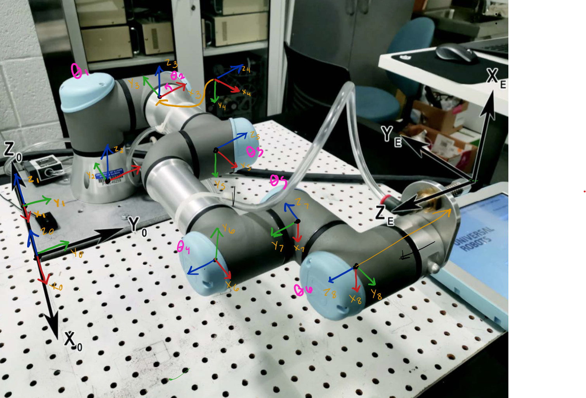
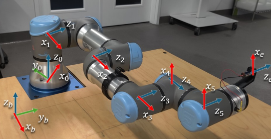
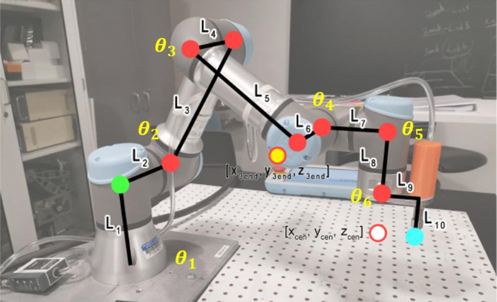

Vision-Guided UR3e Block-Stacking Robot


Project Overview
For ENME480: Introduction to Robotics at the University of Maryland, I programmed a Universal Robots UR3e 6-DOF robotic arm to autonomously detect ArUco-tagged blocks using an overhead camera and stack them into a tower. The full system integrated forward kinematics, inverse kinematics, computer vision, and a ROS2 control pipeline — all running on the physical robot.
The project was built progressively across four lab assignments throughout the semester:
- Week 6: Derived forward kinematics using DH transformations and validated the model in Gazebo simulation
- Week 9: Implemented and tested an inverse kinematics solution on the physical UR3e using a laser pointer
- Week 12: Calibrated the overhead camera and built an ArUco marker detection pipeline using OpenCV
- Weeks 13–15: Integrated everything into a full autonomous pick-and-place system using ROS2
Forward Kinematics
The UR3e has 6 joints, each introducing one rotational degree of freedom. To determine the position and orientation of the end effector from a given set of joint angles, I derived the forward kinematics using the Denavit-Hartenberg (DH) convention. Each consecutive frame-to-frame transformation is defined by four parameters — link length (a), link twist (α), link offset (d), and joint angle (θ) — and chained together to produce the full base-to-end-effector transformation matrix.

DH Parameters
The UR3e physical dimensions used in the model (in mm): d1 = 152, a2 = 244, a3 = 213, d4 = 93, d5 = 83, d6 = 83, with an additional tool offset of 53.5 mm lateral and 59 mm axial for the suction gripper. The world frame origin was offset 150 mm × 150 mm from the robot base corner, with base plate thickness z = 10 mm.
I implemented calculate_dh_transform() in Python — a function that takes a list of six joint angles and returns the 4×4 homogeneous transformation matrix. This was validated in Gazebo by comparing computed end effector positions against the simulator's reported pose via the /ur3/position ROS2 topic.
Inverse Kinematics
With the FK model established, I derived an analytical inverse kinematics solution to compute the six joint angles needed to reach a desired end effector position (x, y, z) and yaw. This was implemented in the inverse_kinematics() function and validated on the physical robot.


Physical Validation
A laser pointer was attached to the end effector. I commanded the robot to five target Cartesian positions and measured where the laser hit the table, comparing against my FK model's predictions. Discrepancies were analyzed and attributed to joint backlash, DH parameter approximations, and tool offset calibration error. Singularity conditions — such as wrist alignments and fully extended configurations — were identified and handled in the IK solution.
Computer Vision & Camera Calibration
An overhead USB camera was mounted above the workspace facing straight down. To locate each block in the robot's coordinate frame, I needed to convert pixel coordinates from the camera image into real-world table-frame coordinates in mm.
Perspective Transform
Using get_perspective_warping_with_aruco.py, I clicked four known reference points on the table edges (clockwise from bottom-left) and provided their known real-world coordinates in mm. OpenCV's getPerspectiveTransform() computed a perspective matrix saved as perspective_matrix.npy, which corrects for camera angle and lens distortion to produce accurate world-frame positions from any pixel coordinate.
ArUco Block Detection
Each block had a unique ArUco marker on its top face. Using OpenCV's ArUco detection module, I:
- Detected each marker's four corner points in the live camera image
- Computed the centroid of each marker in pixel (u, v) coordinates
- Applied the perspective matrix via
image_frame_to_table_frame()to convert pixel coordinates to table-frame (x, y) in mm - Identified each block by its unique ArUco ID
This detection logic was wrapped into a ROS2 node (block_detection_aruco.py) that continuously published detected block positions to /aruco_detection/positions.
ROS2 Pick-and-Place Pipeline
The final integration was main_pipeline.py, which orchestrated the full autonomous sequence. I implemented four key functions:
move_arm()
Publishes a set of joint angles to the /ur3e/command topic using the CommandUR3e message structure to command the arm to a target configuration.
gripper_control()
Toggles the suction gripper on or off while holding the current arm pose, published to the gripper control topic.
move_block()
Sequences the full pick-and-place motion for one block: approach above the block → lower to pick height → activate suction → raise → translate to destination → lower → release suction → raise. The robot never drags blocks across the table surface.
process_blocks()
Given detected block IDs and their table-frame positions, this function determines the order of operations and destination for each block. For the stacking task, each subsequent block was placed on top of the previous with an incrementing height offset.
System Integration
The complete pipeline ran as four concurrent ROS2 nodes:
- USB Camera node: Streams live camera feed
- ArUco detection node: Processes each frame, publishes block positions in world coordinates
- Main pipeline node: Subscribes to block positions, calls IK, sequences arm and gripper commands
- UR3e driver: Receives joint angle commands and executes them on the physical robot
The entire stack ran inside a Docker container using ROS2 Humble, with Gazebo simulation used for pre-lab testing and logic validation before deploying to the physical UR3e in the Robotics and Autonomous Laboratory (RAL).
Results
- Successfully detected all three ArUco-tagged blocks in real time from the overhead camera
- Perspective transform accurately converted pixel coordinates to table-frame coordinates within acceptable margins
- IK solution correctly computed joint angles for all pick and place positions within the robot's workspace
- Robot autonomously picked and stacked all three blocks into a tower without manual intervention